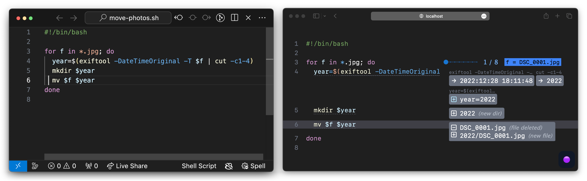
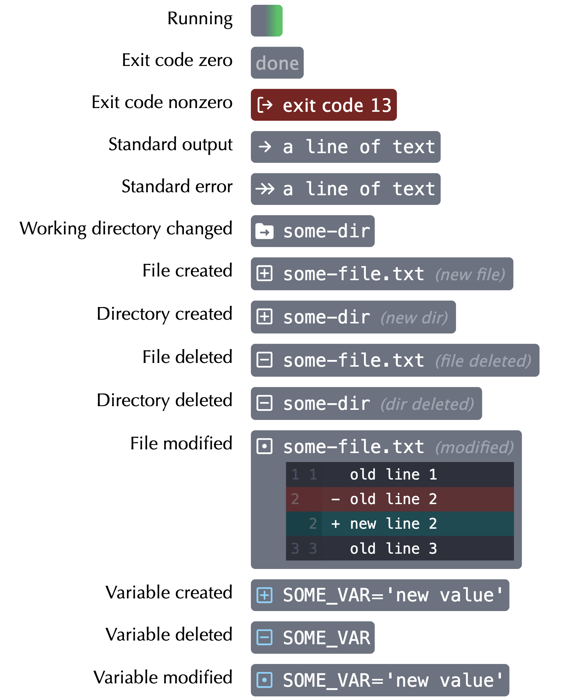
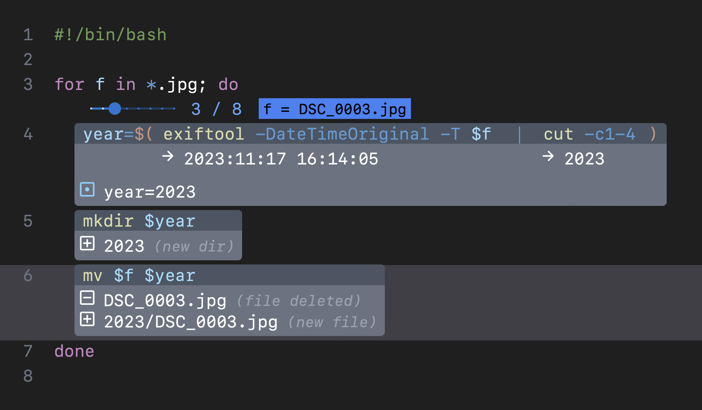
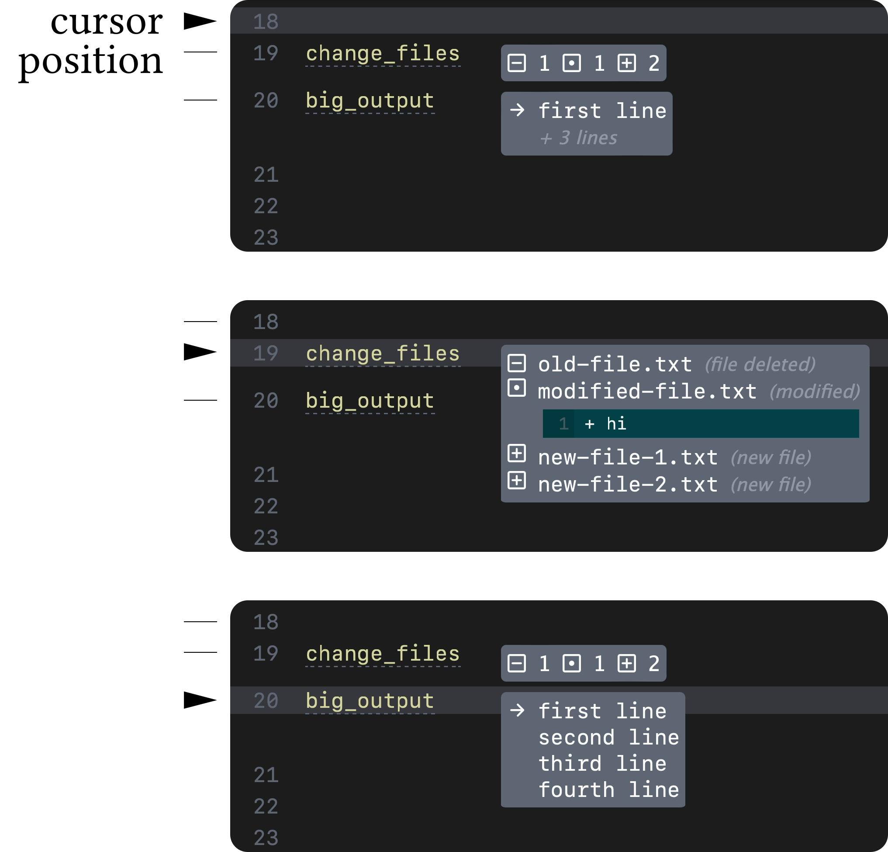
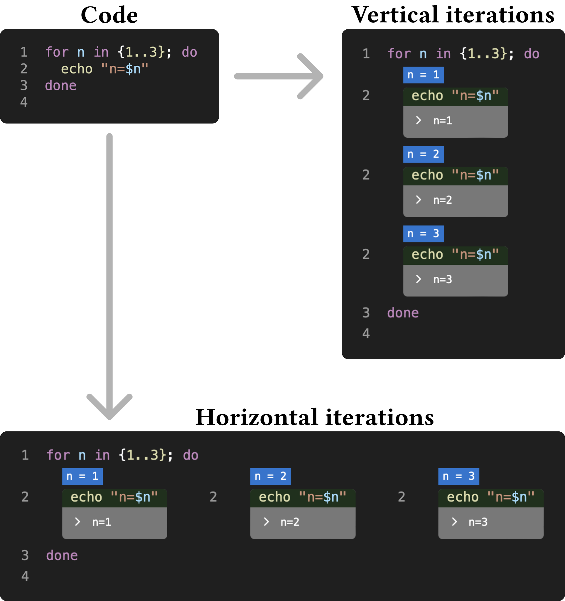
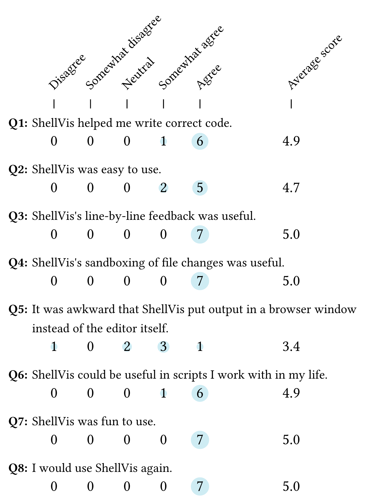

ShellVis: Sandboxed Live Programming for Shell Scripts

for loop, while abbreviated bubbles (b) show command output and effects on shell variables. An expanded bubble for the current focus (c) shows file system effects. The script contains a critical mistake, but ShellVis ran it in a sandbox so the user’s photos are unharmed.Abstract
Live programming provides visibility to programmers by running and tracing programs as they are edited. However, for programs with potentially harmful side effects, liveness can turn mistakes into disasters. We propose enabling live programming in environments with side effects via sandboxing: confining effects to a simulation of the true environment. We apply sandboxed live programming in the challenging context of shell scripting: a ubiquitous and powerful—yet notoriously opaque and error-prone—tool. ShellVis provides line-by-line feedback on a shell script’s run-time behavior, with file operations sandboxed via a safe overlay of the file system. A qualitative user evaluation finds ShellVis to be helpful to participants, replacing tedious existing practices and instilling confidence. Participant responses also reveal areas for future research, particularly bridging the gulf of execution alongside the gulf of evaluation. ShellVis serves as a case study of how sandboxing can bring live-programming techniques into the many real-world programming contexts where side effects are important.
Introduction
While computer use has generally moved from the command line to GUIs, the shell remains a essential site of activity for users who find value in its precision and power. The shell is also a gateway guiding end users into programming [for loops, and so on.
Shell scripts have a much broader reach, both actual and potential, than just system administrators and software engineers. For instance, shell scripts have been adopted by many practitioners that work with data, including data journalists [
In practice, the picture is not so rosy. Many obstacles lie in the way of diverse users wielding shell script super-powers. While these include the learning challenges shared by all programming languages, shell scripts present unique challenges which make them powerful, ubiquitous, and reviled
[fast-paced high-stakes
environment where a single typo could erase entire hard drives
[
We hypothesize that these downsides can be significantly mitigated with an interactive programming environment. In particular, we draw upon the techniques of live programming [
While live programming has proven successful in contexts like spreadsheets and computational notebooks, it faces new challenges when applied to shell scripts. Shell scripts are typically written not (only) to compute numbers or make graphs, but to perform side effects, such as modifying files, which are typically difficult to undo. How can liveness, which relies upon running a program over and over again as it is modified, be made to work in an environment where running the program might be dangerous?
To explore these questions, we contribute ShellVis, a live programming system for bash shell scripts made possible through sandboxing. As a script is edited in a conventional text editor, ShellVis runs it, presenting the programmer with a fine-grained, navigable display of its run-time behavior, including text written to output streams, changes to shell variables, and modifications to the file system. To make sure every run of the program starts from the same clean slate
, and to protect the user from irreversible mistakes, ShellVis runs the script in a virtual file system which simulates changes to the user’s real file system without actually modifying it.
Our goals with ShellVis are to help programmers understand programs (both their own & others’) and write programs more effectively. To assess this, we ran a user study in which seven participants with 1-20 years of shell experience tried out ShellVis for the first time, performing four shell-scripting tasks. Results were encouraging, with participants unanimously expressing that ShellVis was helpful, comfortable to use, and desirable for their own work. From participants, we learned how the feedback & sandboxing provided by ShellVis could replace tedious existing practices. Critically, participants reported that ShellVis made them feel safer and more confident as they worked with shell scripts, a quality we believe is especially important in end-user-programming and learning contexts. Finally, we identified ways that ShellVis does not yet meet users’ needs, from helping them figure out what code to write in the first place, to sandboxing more kinds of effects, to better integrating live feedback with existing editors.
In summary, this paper makes the following contributions:
- Identifying sandboxed live programming as a way to provide fine-grained feedback to programmers working in contexts, like shell scripting, centered around side effects.
- ShellVis, a prototype sandboxed live-programming environment for shell-scripting that uses overlay file systems and visualization techniques to provide safe, fine-grained feedback to programmers.
- A user evaluation of ShellVis demonstrating that programmers found the combination of live-programming and sandboxing to be helpful, while revealing both the efficacy of ShellVis’s approach and needed future directions for sandboxed live programming to reach full effectiveness.
Together, these contributions suggest there is untapped potential for fine-grained live programming to support real-world programming contexts, if side-effects can be appropriately sandboxed.
Background and related work
Shell Scripts
Unix-based operating systems (including Linux and Mac OS) provide a command interpreter called the shell [
On GUI-based computers, graphical mechanisms have largely replaced the shell: users launch applications from icons and drag files between windows representing directories. But even in this setting, the shell maintains unique advantages, including scriptability. While a user can drag a single file in a file manager, they cannot record this action for later re-use, or generalize it to a broader pattern to run in a loop. Graphical automation is an active field of research, and can be found in modern OSes in places like Shortcuts [
Unfortunately, [s]hell scripts are hard even for experts
[a confusing and dangerous object of disgust.
Participants in their HotOS 2021 panel [
Programming Environments
It is helpful to position ShellVis as a within-code live-programming environment, and to place this category in relation to the neighboring concepts of REPL, notebook, and debugger.
The Unix command line is a REPL (read-eval-print loop) for the shell language. REPLs provide fast feedback, enabling experimentation and iterative development. However, going from running one-off commands in a REPL to building a durable program is not always easy, and REPLs in many other languages have been supplanted in practice. For instance, while Python can be run in a REPL, interactive use of Python has shifted strongly towards notebooks like Jupyter [
ShellVis is such a hybrid interface. Rather than taking the form of a notebook, it takes the form of a within-code live-programming environment (WCE): an environment that augments [a] textual-code editor… with in-context displays showing run-time behavior
[
WCEs have some advantages over notebooks. They co-exist seamlessly with the corpus and ecosystem of a language. Existing programs can be loaded into a WCE and existing tools can be used alongside it. As a text-based environment, a WCE benefits from broad support for plain text, from powerful editors to revision control systems like git. Finally, WCEs can bring live feedback deeper
into a program than is afforded by a notebook, such as into loop and function bodies [
Like WCEs, debuggers provide visibility into run-time behavior. However, they are designed for a fundamentally different purpose. While debuggers are used to investigate a program after something has gone wrong, WCEs provide feedback to support writing a program in the first place. Debuggers rarely support this latter task. Traditional single-step debuggers only provide delicate, keyhole visibility into a program, rather than always-on feedback. Omniscient debuggers which make it possible to navigate backwards in time within a program execution trace
[
Live Programming with Side Effects
Live programming relies on re-running programs (or parts thereof) in response to edits so programmers can see the effects of their edits. For this reason, live programming has historically been most at home in pure functional environments like spreadsheets, where re-runs are safe and predictable.mutating
) values in place. Spreadsheet formulas follow the pure functional discipline. Pure functional programs are easy to re-run; running the same program with the same inputs produces the same outputs. As an example of how pure functional architecture benefits liveness: Cells in Jupyter notebooks cannot be reliably re-run in response to upstream changes because information flows between cells via hard-to-track mutations. In contrast, reactive notebooks like Observable follow the spreadsheet execution model [
What happens when we remove this constraint and make imperative systems live? Numerous live environments (including Projection Boxes [
There are two reasons why side effects cause problems for live programming. First, the execution of a script in a live-programming environment is intended to be speculative, showing what the program would do if run in a particular starting world, so the programmer can iterate until the program does what they want. If this program caused real side effects as it re-ran, the programmer would be working on constantly shifting ground. We need to make programs with side effects repeatable. Secondly, by moving to a regime where a program is executed automatically and repeatedly as it is edited rather than at deliberately chosen points, live programming increases the chance that a side effect will cause a disastrous, irreversible result. We need to make programs with side effects safe.
The need for live programming to grapple with external side-effects has recently been recognized by neglecting I/O is not a viable option for tool designers
. Yet, studies about this phenomenon are rare
and I/O is rarely taken into account when designing [live programming] tools.
In order to make a reactive, live programming experience possible, ShellVis takes the approach of sandboxing access to the file system. We are not aware of any other live-programming projects that sandbox or otherwise contain their external effects, as ShellVis does.
Tools for Shell Scripting
The tool most relevant to this work is try, a command-line program for Linux which lets you run a command and inspect its effects before changing your live system
[try, a user takes a command they want to run at the command line and prepends try to it. try then runs the target command in a partial sandbox which simulates writes to the file system without actually performing them. It reports to the user what files have been modified by the command, and offers the option of committing
the changes.
Sandboxing in ShellVis is directly inspired by try. Specifically, we borrow try’s use of an overlay file system
to protect the original file system and detect file system modifications to report to the user (try does), but fine-grained information on what individual commands in a script do. ShellVis complements information on file system modifications with other streams of information, including command output and changes to shell variables (
Live programming tools for authoring shell pipelines include Ultimate Plumber [
Several debuggers exist for shell languages. BASHDB is a single-step debugger for Bash [echo, the shell’s print
statement. Some programmers may also use features like set -x and set -v which tell the shell to log all commands as they run.
Many other tools are available for working around the quirks and corner cases of the shell. ShellCheck is a popular static analysis tool that detects dangerous patterns in scripts [man pages [
Summary
Tools providing visibility into the run-time behavior of shell scripts are rare and inadequate. ShellVis fills this gap with a within-code live programming environment which shows the user as much information as possible about the behavior of an under-development script. A key enabling technology for this is sandboxing the script’s effects to make them repeatable and safe. While sandboxing shell scripts has been explored before in try, sandboxing has not yet been combined with fine-grained feedback. We believe this combination provides a powerful and unexplored synergy.
Sandboxed live programming in ShellVis
Like most within-code live-programming environments
(e.g., Projection Boxes [
- Editing: Provide the user with a means to edit a program.
- Running: At some cadence, automatic or user-defined, run the program.
- Tracing: Monitor the program’s execution to extract fine-grained information.
- Viewing: Report tracing information to the user in a helpful way.
Before jumping into a demonstration, we provide give a quick overview of how ShellVis approaches these four steps.
Editing: ShellVis lets users edit code in the text editor of their choice rather than requiring that they move to a custom editor. Existing editors are polished, familiar, and entrenched. Any tool demanding programmers leave behind their favorite text editor faces an uphill battle. We also chose this path simply to focus on our core objective: the provision of run-time feedback.
Running: The running stage is where ShellVis introduces the essential component of sandboxing. Shell scripts can have many different effects, including file system access, network access, interaction with other processes (including launching or killing processes), access to devices, and assorted system calls. We chose in this project to focus on sandboxing file system access.
The file system is a natural starting point for sandboxing. It is a central site of action and coordination in modern operating systems. Explicit file management is a primary use-case for shell scripts, and the file system is used as backing state for many infrastructures (like git). We leave sandboxing of other effects to future work, but we discuss a broad range of ways they might be handled in
Tracing: The machinery ShellVis uses to sandbox file system access can also be leveraged to tell us what effects each command in a script has on the file system: what files are added, removed, or modified. This tracing of external effects provides essential information to programmers to make sure their scripts are doing what they expect. We augment this with additional trace information on process output, as well as changes in shell state such as variables and working directory.
Viewing: Presenting the large amount of traced information to the user in a helpful way is a significant challenge. ShellVis manages this complexity with a focus+context fisheye view
[
Usage Scenario

bubbles.
As the user edits the script on the left, the display on the right updates.

The purpose of the script shown is to sort a directory of JPEG photos into subdirectories based on the year each photo was taken. Let’s examine how ShellVis assists the user through the steps of making this script, with
Step 1: Looping through files. The user wants to perform an action for each JPEG image, so they start with a for loop. They type out a loop with an empty body and press Ctrl-S to save. When ShellVis detects that the script has changed, it automatically re-runs it and displays a visualization of its execution to the user. In this case, a slider appears to the right of the line with for, reporting that the loop has run 8 times, and on its first iteration the variable f has taken on the value DSC_0001.jpg
. Scrubbing the slider left and right, the user can see what other values this variable takes on. This is the sort of information that might ordinarily be obtained by adding an echo $f in the loop, but ShellVis displays information like this automatically and in-context. Once the loop’s body is no longer empty, this slider will also control which iteration is used as context for visualization of the body’s execution.
Step 2: Inspecting files. Now the user wants to figure out what year these photos were taken. They add a call to exiftool $f, which prints out the file’s EXIF metadata. This output is displayed in a standard-output bubble. In this case, the output is large and the bubble lets the user scroll its contents. They scroll past several irrelevant date fields to find one that looks correct. Scrubbing through iterations of the for loop, they confirm that the target date field changes as expected.
Step 3: Pipe & variable. To extract the year from the exiftool output, the programmer performs a number of steps. They pass some flags into exiftool to return just the Create Date
field. Then they pipe this into cut -c1-4 to return just the first four characters of this date – the year. Finally, they assign this result to the shell variable year. As they perform each of these changes, they save the file to see its effects in the visualizer. By the time they have finished this step, there are three bubbles visible: one for exiftool, one for cut, and one for the variable assignment. This script would not ordinarily print the outputs of exiftool and cut, as these are intercepted by ShellVis for display. The variable assignment bubble displays a different icon meaning variable changed.
Step 4: A mistaken move. Now the user tries to move the photos into directories named after years, with mv $f $year. The bubble on the right shows that the original file at DSC_0004.jpg is gone, and there is now a file at 2022. This is a mistake! Since directories for years do not yet exist, mv interprets its arguments as asking to rename the photo to a file named after the year. In fact, a photo was moved to 2022 in an earlier iteration of the loop, and in this fourth iteration, it is being destructively overwritten with a second photo taken in 2022. Ordinarily, this mistake would be either inconvenient (if backups were made) or disastrous (if not). Fortunately, ShellVis sandboxes file system access: the user’s original files have not been touched and all writes to files are taking place in a simulated layer. The user can simply recognize the mistake and iterate on their script to fix it. Every execution of the script starts from the same state.
Step 5: Fixing the mistake. To fix their mistake, the user adds mkdir $year before mv. With this change, mv’s output bubble shows the move is performed successfully. The script is complete and the user can run it in their terminal.
Interface Design
In this section, we describe ShellVis’s design in more detail, focusing on how we augmented code with feedback. The following section goes into more detail on implementation, including sandboxing.
Scope
ShellVis is intended to bring live programming into shell programmers’ workflows in an incremental way while remaining compatible with existing practices.incremental adoptability
fits under the Sociability
dimension in the Technical Dimensions of Programming Systems
classification [
First, we decided that ShellVis should support standard POSIX-family scripts (like bash and zsh), rather than using an alternative language or switching away from plain-text programming entirely. This decision was made with some reluctance. Compared to modern languages, the shell’s syntax and semantics are idiosyncratic, and this seems to cause real problems for programmers. Many appealing alternatives are available.
Second, we decided to make ShellVis work alongside any existing editor, rather than making our own editor or embedding ShellVis deeply inside a particular editor. For prototyping purposes, we could have built a custom editor on top of an open-source library like CodeMirror [
Fisheye Information Bubbles

As ShellVis runs a shell script, it produces a program trace which it streams to the web browser visualizer. The visualizer displays the trace to the programmer, in the form of information bubbles
attached to commands run by the script.
The ShellVis visualizer runs in a separate window from the code editor. Although this display is separate, it is essential that the programmer be able to shift their attention easily between their editor and the visualizer as they work. These shifts in attention become easier if the visualizer closely resembles code in the editor. (This is why, for instance, the visualizer matches Visual Studio Code’s syntax highlighting.) But, in tension to this goal, we often have many lines of information for each line of code, such as a large output text or multiple file system modifications. Showing all this information pushes successive lines of code down, resulting in a mismatch between the editor and visualizer.
An earlier design for ShellVis, shown in inline
with commands in code rather than off to the side, and suffered from this mismatch problem.

inlinewith code, rather than off to the side.
Projection Boxes [

Our approach is instead to use abbreviated bubbles
which expand to full bubbles when focused, a form of fisheye view
[pop-ups
that may cover up bubbles lower on the page, rather than move them. This helps to keep the overall visualization stable and predictable as focus changes.
As in Projection Boxes, visualization focus in ShellVis is generally controlled by moving the cursor in the editor. Since our visualizer is separate from the editor, a bit of machinery is needed to get cursor information from the editor to the visualizer. We made an extension for Visual Studio Code which reports this information to the ShellVis server via a WebSocket connection. Analogous extensions could be made for other editors. Bubbles can also be expanded in the visualizer by hovering over them with the mouse.
Visualizing Loops
Another design challenge is to visualize the execution of loops. Loops create a structural mismatch between a program’s source code and its trace: a single line of code in a loop may be executed many times. This presents a new instance of the problem above: how can this large amount of information be presented while maintaining a close correspondence with source code?
Early designs of ShellVis (shown in expanded
views of loops, laying out loop iterations either horizontally or vertically, repeating the loop code for each iteration, and using the inline
version of command bubbles shown in The hand is much slower than the eye
.

We ultimately opted to address this problem with interaction. As shown in for and while loops. As the user drags the slider, ShellVis shows either the value of the loop variable (for a for loop) or a command bubble for the loop condition (for a while loop). Annotations in the body of the loop update to reflect the selected iteration. Using the slider, the user can make sure the loop is behaving as expected across iterations.
Interface Scalability
The current UI design of ShellVis scales well to moderate amounts of data. If a loop has hundreds of iterations, the user can scrub through them as easily as if it had three. If a command has a large output, its output bubble will grow to a maximum size and then let the user scroll its contents. (One of our study tasks involves a file with several thousand lines.) We have not optimized our design or implementation for big data
; within a shell context, handling hundreds to thousands of iterations or lines is sufficient for many end-user applications.
Implementation
ShellVis is implemented in two parts: a server and a client. The ShellVis server runs on the user’s own system. It is responsible for running a shell script in a sandboxed environment, tracing its activities, and reporting this information to the client as a live-updating program trace. The client runs inside a web browser. It is responsible for displaying the program trace to the user and allowing the user to explore it interactively.
Implementation of the ShellVis client was fairly routine. As a shell script executes and is traced, the trace is streamed from the server to the client with Automerge [
Sandboxing
To make live programming of shell scripts possible, ShellVis must sandbox and trace the effects of scripts. Currently, sandboxing is limited to effects on the filesystem. ShellVis currently does nothing to sandbox other effects, such as network requests. We discuss the prospects for these other effects in
ShellVis sandboxes the file system with a union file system [union directory
) such that reads go straight to the root file system but writes go to a delta
directory which records file modifications. Subsequent reads of changed files route to the delta directory instead, making a union file system essentially a copy-on-write
file system. If a shell script is run in the union directory rather than directly on the root file system, it can read the entire root file system, but any changes it performs will be recorded in the delta directory rather than touching real files. This protects the original file system.
The contents of the delta directory also tell us what file system modifications have occurred. As we wish to know more precisely what modifications are produced by each line of a script, ShellVis actually stacks two union file systems on top of one another. Each command is run in the upper union file system. After it is run, the upper delta directory is scanned for changes to add to the program trace, and the changes are committed to the lower union file system. The upper delta directory is then cleared for the next command.
As mentioned in section try, a command-line tool for Linux which lets users sandbox individual commands [try’s sandbox is based on two Linux operating-system features: OverlayFS and namespaces. OverlayFS is a union file system built into Linux. Namespaces provide several important forms of process isolation. Most importantly for try, they make it possible to run a process with an arbitrary directory chosen as its root directory, so references to /
in the program will resolve to that directory. try runs its target command in a namespace where /
refers to the OverlayFS mount directory.
ShellVis is currently built for macOS, which does not have a built-in union file system. Instead, ShellVis uses unionfs-fuse [chroot call, which provides the root-setting function of namespaces without its other features. While it should be enough for our purposes, we ran into several issues with chroot. Using chroot on macOS requires disabling System Integrity Protection, which is cumbersome and weakens the computer’s security. Even with SIP disabled, we were unable to make chroot work seamlessly on macOS. Without chroot, our sandboxing is leaky. File accesses performed with relative references are sandboxed, since they remain in the sandbox directory, but absolute paths will refer to original files outside the union file system. This disqualifies the current ShellVis prototype from being used in the wild by users who may be unaware of this limitation. Future work on ShellVis will likely move to Linux, where these problems can be more easily fixed and which is generally a more accommodating environment for OS-level experimentation.
Tracing
The ShellVis server watches a target script file for changes and re-runs the script whenever the editor saves a new copy. This and the selection monitoring mentioned in
sv_ functions, not shown here.The server needs to somehow obtain detailed, line-by-line information about a shell script’s behavior when it runs. Our approach here was to transform the script before running it to add additional tracing instructions. An example of this transform is shown in sv_msg and sv_upload functions are used in this transformed code to report events (like a command returning) and upload data (like standard IO streams from a command) to the ShellVis server over one-off HTTP connections. This is used for tracing, as well as to manage per-command sandboxing.
To perform the source transformation, ShellVis uses the mvdan/sh library [
An alternative approach to tracing a script’s execution would be to fork a shell’s codebase and add instrumentation directly to its interpreter, so an unmodified script can produce a trace when run. Through our implementation work, we have discovered that transforming a shell script without modifying its behavior can be a complex and error-prone endeavour, so instrumenting a shell directly may be preferable for future work.
Performance
ShellVis currently imposes a significant performance overhead over running a script directly. For instance, the final script constructed in section
ShellVis relies on unionfs-fuse for sandboxing, so script commands that read or write to the file system must go through that system. We expect this incurs an additional cost. If ShellVis were moved to Linux, it would be able to use OverlayFS, which is likely faster since it runs in the kernel rather than in user space.
ShellVis’s approach of re-running a script from scratch whenever it changes will become less practical for larger or slower scripts, not due to overhead from ShellVis but due to the intrinsic cost of running the script. Consider scripts that process large media files like videos, or those that search through large directory structures. New techniques could make it more practical to live-program slower scripts like these. For instance, loops could automatically be limited to a smaller number of iterations for testing, or the results of long-running subcommands could be cached.
User Study Design
In order to assess whether sandboxed live-programming achieves its goals in the ShellVis prototype, and to provide further insight into the experiences of shell programmers, we conducted a user evaluation. Our study focused on three research questions:
- RQ1: What challenges do programmers face working with shell scripts?
- RQ2: How do programmers make use of live feedback when working with shell scripts?
- RQ3: How do programmers make use of sandboxing when working with shell scripts?
Participants
We recruited seven participants through social media channels. Shell-scripting experience ranged from 1 to 20 years. All our participants were men between the ages of 28 and 42.
Procedure
A study session began with a short interview focused on the participant’s history with shell-scripting and problems they ran into while working with shell scripts. We deliberately opened the session with this interview in order to obtain a participant’s prior perspective, unbiased by the approach of our prototype.
Next, we taught the participant how to use ShellVis through the photo-sorting scenario shown in
- titles: Rename text files to the titles contained in their first lines, with a possible pitfall caused by the presence of spaces in titles. Starts from a blank file.
- users: Delete user directories named in lines of a text file, with a possible pitfall caused by a blank line in the file. Starts from faulty code, such as might be produced by a code assistant.
- log: Read a complex pipeline which filters a log and aggregates information from it.
- lines: Multiply the line-counts of files in a folder.
Full prompts for these tasks are available in Appendix
Finally, we conducted a post-study interview. This interview was not formally structured, but we focused on eliciting the participant’s impressions of ShellVis and how they thought it might or might not fit into their real-world workflows. In particular, we asked participants whether they thought ShellVis would address any challenges they mentioned at the start of the session, or not. Sessions ranged from one to two hours in length.

Limitations
Our study has significant limitations. The tasks we assigned to users were simple and designed to make use of ShellVis’s features. Our sample size is small and demographically narrow. While no participants were prior acquaintances of the authors, recruitment through social networks likely biased the study population towards people sympathetic to our goals. Since all participants had a least a year of shell experience, conclusions should not be drawn from this study about the value of ShellVis to shell-scripting novices.
User Study Results
To analyze the study data, the first author performed open coding on video recordings, akin to phases 1-2 of thematic analysis as described in like this
and labelled with participant IDs (like P7).
Challenges with Shell Scripts (RQ1)
When we asked participants in our initial interview about problems they had run into with shell scripts, most participants were quick to recount difficulties.
A few had pointedly negative feelings, responding that everything
(P2) or essentially every part of [shell scripting]
(P3) was challenging.
The most common problems mentioned were not knowing, or not remembering, how to do certain things in shell scripts.
Can you remember what the right thing to call is? Because there’s so many magic spells… [even] if you know the spell, how do you cast it?
(P1).
I use [shell scripts] only frequently enough to remember that there is a way to do something, but I don’t remember exactly what is the way.
(P3). Every time, I reach for Google first, or now ChatGPT.
(P5).
[I]t’s a matter of, how do you bring up the right incantation to get it working right… I end up reaching for the manual [more] often than not…
(P6).
I find some of the shell keywords quite challenging to remember… these things I constantly have to look up even though I write these time and time again.
(P7).
Participants often attributed these memory problems to not using shell scripts often. Shell scripts seem to occupy an unfortunate middle ground: used too infrequently to be remembered, but frequently enough that forgetting is a pain.
Participants employ different techniques to get around these problems, including Google, ChatGPT, looking up examples of one’s prior work, and man pages. These gulf-of-execution
struggles have a subtle relationship to ShellVis’s gulf-of-evaluation
approach [
Several participants reported they had run into disasters while working with the shell: I’m extremely paranoid… because I have seen files disappear. And there’s nothing you can do about it later; it’s pretty hard to recover.
(P3). To protect themselves against such disasters, shell-scripters employ different methods. P3, P4, and P7 mentioned putting echo in front of potentially destructive commands to dry run
them. Other participants tried to backup files before starting work on a script. P5 says always make backups
, but also reported that backups are annoying to use, take up space, and you may simply forget to make them.
In the initial interview, participants did not generally mention lack of visibility, the problem live programming most directly addresses, as a problem. The one exception was P7, who remarked:
As a shell script gets more and more complicated, there’s no observability into these pipelines… I think the lack of observability… is sometimes a little bit of a friction point.
Problems with lack of visibility were mentioned more often as participants worked through tasks with ShellVis and reflected afterwards.
Using Live Feedback (RQ2)
Participants unanimously agreed that ShellVis’s line-by-line feedback was helpful (Q3 avg of 5.0/5). As ShellVis is at its heart a visualizer, it is perhaps not surprising that participants found ShellVis useful for understanding code they hadn’t written (as specifically probed in logs and to a lesser extent users):
I think I kind of know what that regex does, but I’m not sure… [ShellVis] is nice because it gives you the output right there…
(P1),
If I were looking into a shell script that I didn’t author myself, [ShellVis] would also be incredibly valuable… [Without ShellVis,] you only see the pieces of the pipeline, but not the data flowing through.
(P7).
Participants also found ShellVis useful while actively writing code, to plan their next step or diagnose why their last step failed. P7 explained this experience:
[With ShellVis,] when I’m reasoning about a future step, I can look at intermediate artifacts from previous steps without having to rerun. I could scan upward on the web view and be like: oh yeah, that variable I used earlier… it has this data, versus having to reload that context in my head after I had gone maybe two, three steps forward.
. A specific example of this experience: While working on titles, P4 wondered why a use of $file in their code wasn’t producing the expected result.
They asked what value $file was taking on: Can I see what
$file is for each… Oh yeah, duh, it’s right there!
Several participants described how live feedback provided confidence or comfort: The preview [shows] that when you’re running this, the first file that gets picked up is this. That builds a certain confidence level within me that, oh, that’s right.
(P6), Just like knowing that things are successfully running is very comforting.
(P7). We will discuss these affective dimensions more in
ShellVis vs. echo Logging
A natural point of comparison for ShellVis is logging information from a script with echo. Participants agreed that ShellVis’s output annotations were a significant improvement over this status quo, and gave several reasons why.
First, automatic output annotations remove the tedium of adding and removing logs during a debugging process: I no longer have to litter my [script] with echoes that I need to subsequently search for and clean up.
(P7). In response to a question about echo-based logging, P4 reported: You can put all this crap in… and have it print all of it, but then you have to put in case handling so that it isn’t printing all the time, because you don’t want all this garbage debugging stuff going across your console.
.
P5 further noted that ShellVis’s show everything
approach obviates the need to know where to place logs: I think it’s huge because you’re removing a whole extra step… knowing where to put the right echoes. I don’t have to think about that because it’s all there. [With logs] I wouldn’t really know which line is causing the problem. It could be a line further up that’s causing a downstream problem, and I could be putting the echoes in the wrong place.
Finally, participants reported numerous ways it was more helpful to see output annotations in context, attached to specific lines of code and structures like loop iterations, than to see echoed output streaming in a terminal. P3 reported that, with echo-based logging, finding exactly where you are is difficult… if your logs are too sparse, mapping that back to the source can be difficult… Or if it’s in a for loop, at what execution did that happen?
. P4 similarly reported that It’s easy when you’re a couple of nested loops in to get lost on where you are. So to see [with ShellVis] what the machine thinks is very helpful.
ShellVis vs. Debuggers
Debuggers did not arise in conversation as much as echo logging did, likely because debuggers are used less often by participants. P4 had some experience with the PowerShell debugger, but explained that ShellVis was a little bit [different], cause to see what variables are [with a debugger], you have to single-step stuff… Whereas this is like, let’s run it. And now I can just use the little slider thing to see as it was going along… It’s a good way to visualize what the shell script is doing.
Using Sandboxing (RQ3)
Participants unanimously agreed that ShellVis’s sandboxing of changes to the file system was helpful (Q4 avg of 5.0/5). In our initial interviews (dry run
versions of scripts, and compared this to ShellVis: If [ShellVis] was able to catch that kind of stuff as a sandboxing test and make the automated execution stop, that’s a pretty powerful aid – and something I usually have to manually add.
P7 described their approach: What I would ordinarily do is… pick one file to start and then set that as
$f, so I might do something f=/docs/doc1.txt. And then… if one file does change destructively, I could easily roll back. Or alternatively, I might start off echoing everything and to be like, okay, that looks sensible. But with [ShellVis], I can just very confidently run the entire script, which is very cool.
We were gratified to hear some participants using affective language like confidence
and comfort
when describing the experience of using ShellVis. P6 said [ShellVis] gives you a lot of confidence that, look, I can fix it before I actually run it. So I think the cognitive load… goes away. I’ll be less worried about executing this and making a mess of my system.
. P3 said Having this safe environment makes me very comfortable with just wildly trying things and see what happens, versus I’m usually very, very cautious because deletions are very hard to undo.
. This language of exploration and experimentation was echoed by P7: [ShellVis] is an environment that allows this kind of experimenting. You can kind of be aggressive.
Affective dimensions like these may be an important (but difficult-to-measure) benefit of safe live-programming environments. Beyond making programming faster or less error-prone, these environments may cultivate the kind of play and experimentation that support learning and creativity. Our study participants universally reported that they had fun working with ShellVis (Q7 avg of 5.0/5).
Of course, a feeling of safety should be backed up by actual safety. Several participants made clear that ShellVis would need to earn their trust before they would feel comfortable using it (P1, P4).
As discussed in
Overall Impressions
After using ShellVis, participants were uniformly positive about its helpfulness in accomplishing study tasks (Q1 avg of 4.9/5) and its potential usefulness in their own work (Q6 avg of 4.9/5). All participants expressed an interest in using ShellVis in their own lives: I think it’s really cool; I would love to have a tool like that
(P1), This is good enough that I actually would like to be able to run it on my computer
(P2), It already works amazingly well… It felt, like, transparent,
(P3), I would definitely use a tool like this
(P4), Is this coming out anytime soon?
(P5), Do you have an ETA for when this tool might potentially be made available?
(P6), I really want this tool and I would use it immediately.
(P7).
Discussion & Future Work
Gulf of Evaluation vs. Gulf of Execution
As discussed in
We asked participants about this in our final interview. They tended to agree with the interpretation above: My initial response… is that I don’t think it helps there. Because to get the tool to do anything, you have to give it some input.
(P1), If I start off with the fact that I don’t know how to structure a
(P6). P5 agreed, but added some nuance, suggesting that bridging the gulf of evaluation could in some situations assist in bridging the gap of execution: for loop, then I don’t think [ShellVis] provides enough feedback to say, okay, this way.Partially, maybe [ShellVis] helps because you see the error messages right there, and you can glean some information from the error messages… but it’s always better to know the commands beforehand.
In a broader sense, it is clear from participant reports in execution
task of writing shell scripts, whether or not it was able to assist with low-level aspects like syntax and command flags.
LLM-powered code assistants, like Copilot [I do think a common mode with [code assistants]… is like, Oh, great. I wrote this code. It looks right. Is it right? I don’t know. I guess I better check. And in that sense, I do think the the introspection afforded with this tool is pretty useful.
(P2)
If [the code assistant] is wrong… with your tool I’ll see it immediately without destroying anything… So I would certainly use LLMs more if I’m using ShellVis, because mistakes won’t be costly.
(P3)
Because I don’t trust code assistants, there’s still that verification phase… Because this tool provides me live feedback, it’s a very, very good way of verifying what the code assistant has put out. And the fact that it does it in a sandbox manner without a destructive mode is the key highlight.
(P6)
Further study is required to determine how well ShellVis supports the use of LLM-powered code assistants. We are encouraged by the results of
System improvements
Interviews with participants surfaced numerous opportunities to improve ShellVis’s design and feature-set.
Editor integration.
We were worried that our decision to run the ShellVis visualizer in a window separate from the editor (motivated in
Surveying across loop iterations.
Several participants noted that, though the loop scrubbing interaction was easy to use, it meant that anomalous behavior could hide in iterations that weren’t visible at the moment. Even though the for-loop scrubbing was cool, it would be nice to be able to see each loop in aggregate… If I could just quickly scan through a list and see all loop iterations in some kind of way that grouped each iteration, I think that [spotting an anomaly] would have also been really easy…
(P7). Different approaches may accommodate the need to survey many iterations of a loop at once. For instance, unfolded
designs like those shown in peripheral vision
for anomalies to be spotted from afar.
Connecting lines across commands.
While the loop view in ShellVis makes it easy to see chains of cause and effect within an iteration, idiomatic shell usage often involves commands that process streams line-by-line without loops, like sed and awk. (Our log task highlighted commands like this.) When line-by-line commands are piped together, ShellVis shows the outputs of each stage of the pipeline in separate bubbles, distancing corresponding input & output lines. P3 and P7 both noted that this made it hard to follow the transformation of lines by commands, and they wanted a way to go from a line output of a command line program and trace it back to an earlier command’s line
(P7). This desire makes perfect sense from a user’s perspective, but it may be challenging to implement because Unix commands do not expose information on mappings between their input and output lines, and these relationships vary between tools.
Extensible visualizers and editors.
While ShellVis’s generic annotation bubbles are usually enough to show what a shell script is doing, domain-specific visualizations for particular commands or situations could go even further. For instance, P5 often writes scripts that process JSON data which they need to inspect. They currently use Postman [a GUI for any command line – as long as there’s a tool that someone likes, or if you’re a developer of a tool, you could write some sort of GUI spec that plugs into ShellVis.
. P7 imagined a system where the programmer could directly edit a command’s output and the system could infer a change to the command to match the desired manipulation—a vision similar to output-directed programming [richer
visions [
More shell features.
ShellVis does not yet provide feedback for the full gamut of shell features, as mentioned in It would be cool to see not only the command I’m running [in the source file], but also what actually gets run in the post interpolation step.
. We agree, as this feature would help illuminate many mistakes from misuse of the shell’s idiosyncratic interpolation and quotation features.
Remote use. At least three participants (P2, P3, P4) wondered if ShellVis could be used to edit scripts running on remote systems. While ShellVis does not currently support this, its client-server architecture should make it easy to adapt to this use: the server can run on a remote system while the client runs locally in a user’s browser.
Sandboxing More Effects
Not all side effects of shell scripts take place through the file system. The second-most prominent side effect of scripts is probably network requests. A network request can be patently side-effectful, such as a request to a database server to delete a user’s account. Even seemingly innocuous requests, such as to HTTP GET endpoints, might cause problems if made indiscriminately, like costing money for a paid API or triggering rate limits. Beyond the file system and network requests, there are many other ways scripts can cause effects: writing to the clipboard, modifying running processes, making system calls, or causing physical effects like a print job.
These effects call for different approaches to sandboxing. We might call our current file system approach simulation, as we are able to, with high fidelity, simulate a script’s effects on the file system using a union file system. In contrast, it is impossible to simulate network requests to arbitrary hosts, as we cannot anticipate, in general, how remote hosts might respond to requests.
When simulation is not possible, the simplest alternative approach is detecting and quarantining side effects. This involves detecting that a command will have an effect, stopping execution, showing the user the intended effect (in the context of the program trace), and giving them options of how to proceed. If the effect is entirely unexpected and unwanted, they can stop execution and revise the program to fix the problem. If they deem the effect harmless, they can approve it and execution will continue. If the effect looks like the right effect to perform, but the user doesn’t want to perform it yet due to irreversible side-effects (say, on a remote host), they can mock it: provide, by hand, what they anticipate the response will be so that execution can continue. On top of the manual interactions described above, layers of automation are possible: commands could be placed on allowlists and denylists, or mock utilities could be provided to automate the mocking of a command.
We have not tested any of these approaches yet. Encouragingly, P4 (a system administrator who frequently writes potentially destructive
scripts) brought up some of these ideas themselves in our conversation: If there was a way to have the tool say, okay, I would have run this, we’re going to assume that it worked and set the variable to this predefined thing so that the script execution can continue.
P4 was the only participant who brought up the need to sandbox more than the file system. This should not be taken as a sign that the issue is unimportant; we expect our study design did not prime participants to think about this issue.
Sandboxed Live Programming Beyond Shell Scripts
We believe the scope of the sandboxed live programming technique is much broader than just shell scripts, as practical situations typically call for side-effects. The need for sandboxing may be especially strong in end-user programming contexts, both because end users’ concerns are often tightly tied to immediate effects they wish to perform, and because end users often have less experience programming and require more support.
How might the sandboxing approach of ShellVis translate from the Unix world of files and command-line programs to the GUI world? For instance, AppleScript [
Beyond familiar computing environments, new possibilities on the horizon may enable richer forms of sandboxing. Local-first software [
An Environment for Learning
Our study participants were proficient programmers. We don’t expect that someone without shell-scripting experience would perform well (or have a good time) in our study, especially given how little ShellVis does to help bridge the gap of execution ([ShellVis] would make scripting a lot more accessible to people, I think, because you can still build iteratively, but now it’s easier to see what each iteration would be doing.
Conclusion
The reach of live programming has been limited by its incompatibility with side effects. We have presented a general approach to this problem, sandboxed live programming, and tested the approach through ShellVis, our prototype of sandboxed live shell scripting. ShellVis combines overlay file systems with focus+context visualizations to create a new way of interacting with the shell, with the immediacy of the command line, the rich feedback of a notebook, and the program-editing capabilities of an editor. Participants in our study found the live visibility enabled by sandboxing helpful in understanding and writing code, and they enjoyed the feeling of safety provided by sandboxing. Discussion with participants also revealed the importance of complementing ShellVis with other tools to completely bridge the gulf of execution. With the development of further forms of sandboxing, these learnings can be extended to help make live programming practical in diverse end-user contexts with side effects.
Study tasks
Below are the written prompts for the four tasks in our study, including any starter code that was provided.
titles
The
docsdirectory contains a few speeches. Each lists its title as its first line. Write a script that renames each file to its title.
(Participants discovered that some of the titles contained spaces, which could cause trouble unless they were appropriately quoted.)
users
We’re running a web service, and need to respond to some users’ requests to delete their accounts. We have a list of usernames in a file called users-to-delete.txt. Write a script that deletes the user folders for each user in that file.
A code assistant generated the following code. Is it correct?
cat users-to-delete.txt | while read LINE; do rm -rf "users/$LINE" done
(Participants discovered that users-to-delete.txt contained a spurious blank line, which the above script incorrectly interprets as a command to delete the entire users folder.)
log
What does this script do?
cat launchd.log | egrep 'Sandbox restriction$' | sed -n 's/.*requestor = \(.*\)\[.*/\1/p' | sort | uniq -c
lines
There are some files in the
filesdirectory. Write a script that computes the product of their line counts. (Ex: If there were two files, one with 10 lines and one with 20, the product would be 200.)The starter code below counts lines, but doesn’t do any multiplying.
product=1 for f in files/*; do wc -l < $f done
References
- Apple Inc. (2024). Shortcuts User Guide - Apple Support. https://support.apple.com/guide/shortcuts/welcome/ios
- Automerge contributors. (2024). Automerge CRDT. https://automerge.org/
- Bernstein, R. (2024). Pipecut. https://bashdb.sourceforge.net/
- Cantrill, B. M., Shapiro, M. W., & Leventhal, A. H. (2004). Dynamic Instrumentation of Production Systems. Proceedings of the General Track: 2004 Usenix Annual Technical Conference.
- Chu, A. (2024). Oils. https://www.oilshell.org/
- Clarke, V., & Braun, V. (2016). Thematic analysis. The Journal of Positive Psychology, 12(3), 297–298. https://doi.org/10.1080/17439760.2016.1262613
- Cook, W. R. (2007, June 9). AppleScript. Proceedings of the Third ACM SIGPLAN Conference on History of Programming Languages. HOPL-III ’07: ACM SIGPLAN History of Programming Languages Conference III. https://doi.org/10.1145/1238844.1238845
- Czapliński, M. (2021). up - the Ultimate Plumber. https://github.com/akavel/up
- D’Antoni, L., Singh, R., & Vaughn, M. (2017). NoFAQ: synthesizing command repairs from examples. Proceedings of the 2017 11th Joint Meeting on Foundations of Software Engineering, 582–592. https://doi.org/10.1145/3106237.3106241
- Ferdowsi, K., Huang, R. (Lisa), James, M. B., Polikarpova, N., & Lerner, S. (2024). Validating AI-Generated Code with Live Programming. Proceedings of the CHI Conference on Human Factors in Computing Systems, 1–8. https://doi.org/10.1145/3613904.3642495
- Free Software Foundation, Inc. (2020). Bash - GNU Project. https://www.gnu.org/software/bash/
- Furnas, G. W. (1986). Generalized fisheye views. Proceedings of the SIGCHI Conference on Human Factors in Computing Systems, 16–23. https://doi.org/10.1145/22627.22342
- Furnas, G. W. (2006). A fisheye follow-up. Proceedings of the SIGCHI Conference on Human Factors in Computing Systems, 999–1008. https://doi.org/10.1145/1124772.1124921
- GitHub, Inc. (2024). GitHub Copilot · Your AI pair programmer. https://github.com/features/copilot
- Greenberg, M., & Blatt, A. J. (2019). Executable formal semantics for the POSIX shell. Proceedings of the ACM on Programming Languages, 4(POPL), 1–30. https://doi.org/10.1145/3371111
- Greenberg, M. R., Kallas, K., Vasilakis, N., & Kell, S. (2021). Report on the “The Future of the Shell” Panel at HotOS 2021. ArXiv, abs/2109.11016. https://api.semanticscholar.org/CorpusID:237605419
- Greenberg, M., Kallas, K., & Vasilakis, N. (2021). Unix shell programming. Proceedings of the Workshop on Hot Topics in Operating Systems, 104–111. https://doi.org/10.1145/3458336.3465294
- Greenberg, M., Kallas, K., & Vasilakis, N. (2021). The future of the shell. Proceedings of the Workshop on Hot Topics in Operating Systems, 240–241. https://doi.org/10.1145/3458336.3465296
- Haverbeke, M. (2024). CodeMirror. https://codemirror.net/
- Healy, K. (2024). Modern Plain Text Computing. https://mptc.io/
- Hempel, B., Lubin, J., & Chugh, R. (2019). Sketch-n-Sketch. Proceedings of the 32nd Annual ACM Symposium on User Interface Software and Technology, 281–292. https://doi.org/10.1145/3332165.3347925
- Hoffswell, J., Satyanarayan, A., & Heer, J. (2018). Augmenting Code with In Situ Visualizations to Aid Program Understanding. Proceedings of the 2018 CHI Conference on Human Factors in Computing Systems, 1–12. https://doi.org/10.1145/3173574.3174106
- Holen, V. (2024). ShellCheck – shell script analysis tool. https://www.shellcheck.net/
- Horowitz, J., & Heer, J. (2023). Engraft: An API for Live, Rich, and Composable Programming. Proceedings of the 36th Annual ACM Symposium on User Interface Software and Technology, 1–18. https://doi.org/10.1145/3586183.3606733
- Horowitz, J., & Heer, J. (2023). Live, Rich, and Composable: Qualities for Programming Beyond Static Text. https://doi.org/10.1184/R1/22277338.v1
- Huang, R. (Lisa), Ferdowsi, K., Selvaraj, A., Soosai Raj, A. G., & Lerner, S. (2022). Investigating the Impact of Using a Live Programming Environment in a CS1 Course. Proceedings of the 53rd ACM Technical Symposium on Computer Science Education, 495–501. https://doi.org/10.1145/3478431.3499305
- Jakubovic, J., Edwards, J., & Petricek, T. (2023). Technical Dimensions of Programming Systems. The Art, Science, and Engineering of Programming, 7(3). https://doi.org/10.22152/programming-journal.org/2023/7/13
- Kamara, I. (2024). explainshell.com - match command-line arguments to their help text. https://www.explainshell.com/
- Kang, H., & Guo, P. J. (2017). Omnicode. Proceedings of the 30th Annual ACM Symposium on User Interface Software and Technology, 737–745. https://doi.org/10.1145/3126594.3126632
- Kasibatla, S., & Warth, A. (2017). Seymour: Live Programming for the Classroom. https://harc.github.io/seymour-live2017/
- Kleppmann, M., Wiggins, A., van Hardenberg, P., & McGranaghan, M. (2019). Local-first software: you own your data, in spite of the cloud. Proceedings of the 2019 ACM SIGPLAN International Symposium on New Ideas, New Paradigms, and Reflections on Programming and Software, 154–178. https://doi.org/10.1145/3359591.3359737
- Kluyver, T., Ragan-Kelley, B., Pérez, F., Granger, B. E., Bussonnier, M., Frederic, J., Kelley, K., Hamrick, J. B., Grout, J., Corlay, S., Ivanov, P., Avila, D., Abdalla, S., Willing, C., & Team, J. D. (2016). Jupyter Notebooks - a publishing format for reproducible computational workflows. International Conference on Electronic Publishing.
- Lerner, S. (2020). Projection Boxes: On-the-fly Reconfigurable Visualization for Live Programming. Proceedings of the 2020 CHI Conference on Human Factors in Computing Systems, 1–7. https://doi.org/10.1145/3313831.3376494
- Maciá, J. A. (2024). Filesystem Access Tracer. https://github.com/jacereda/fsatrace
- Martí, D. (2024). mvdan/sh. https://github.com/mvdan/sh
- Maxwell, D. W. (2015). Pipecut Project Home. https://web.archive.org/web/20220409090300/pipecut.org
- McGregor, S. (2024). Adding Headers and Using Shell Scripts. https://data.journalism.columbia.edu/content/adding-headers-and-using-shell-scripts
- Meta Platforms, Inc. (2024). React. https://react.dev/
- Microsoft Corporation. (2024). How to Debug Scripts in Windows PowerShell ISE. https://learn.microsoft.com/en-us/powershell/scripting/windows-powershell/ise/how-to-debug-scripts-in-windows-powershell-ise
- Morgan, L. (2024). Murex. https://murex.rocks/
- Nardi, B. A. (1993). A small matter of programming. MIT Press.
- Norman, D. A., & Draper, S. W. (1986). User Centered System Design. CRC Press. https://doi.org/10.1201/b15703
- Nushell Project Developers. (2024). Nushell. https://www.nushell.sh/
- Observable Inc. (2022). Observable - Explore, analyze, and explain data. As a team. https://observablehq.com/
- Omar, C., Moon, D., Blinn, A., Voysey, I., Collins, N., & Chugh, R. (2021). Filling typed holes with live GUIs. Proceedings of the 42nd ACM SIGPLAN International Conference on Programming Language Design and Implementation, 511–525. https://doi.org/10.1145/3453483.3454059
- OpenAI, L.L.C. (2024). ChatGPT. https://chatgpt.com/
- Pendry, J.-S., & McKusick, M. K. (1995). Union Mounts in 4.4 BSD-Lite. USENIX 1995 Technical Conference.
- Postman, Inc. (2024). Postman API Platform. https://www.postman.com/
- Pothier, G., Tanter, É., & Piquer, J. (2007). Scalable omniscient debugging. ACM SIGPLAN Notices, 42(10), 535–552. https://doi.org/10.1145/1297105.1297067
- Radek Podgorny, B. S. (2024). unionfs-fuse. https://github.com/rpodgorny/unionfs-fuse
- Rauch, D., Rein, P., Ramson, S., Lincke, J., & Hirschfeld, R. (2019). Babylonian-style Programming: Design and Implementation of an Integration of Live Examples into General-purpose Source Code. The Art, Science, and Engineering of Programming, 3(3). https://doi.org/10.22152/programming-journal.org/2019/3/9
- Ritchie, D. M., & Thompson, K. (1974). The UNIX time-sharing system. Communications of the ACM, 17(7), 365–375. https://doi.org/10.1145/361011.361061
- Ritchie, D. M. (1980). The evolution of the unix time-sharing system. In Lecture Notes in Computer Science (pp. 25–35). Springer Berlin Heidelberg. https://doi.org/10.1007/3-540-09745-7_2
- Sulír, M., Chodarev, S., & Nosáľ, M. (2023). Outside the Sandbox: A Study of Input/Output Methods in Java. Proceedings of the 27th International Conference on Evaluation and Assessment in Software Engineering, 253–258. https://doi.org/10.1145/3593434.3593501
- The PaSh Authors. (2024). binpash/try. https://github.com/binpash/try
- University of Cambridge Information Services. (2024). Unix: Simple Shell Scripting for Scientists. https://training.cam.ac.uk/ucs/course/ucs-scriptsci
- Victor, B. (2006). Magic Ink: Information Software and the Graphical Interface. https://worrydream.com/MagicInk/
- fish-shell contributors. (2024). fish shell. https://fishshell.com/
- xonsh developers. (2024). The Xonsh Shell — Python-powered shell. https://xon.sh/